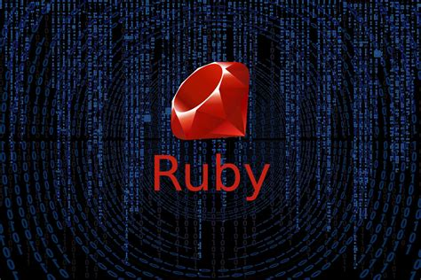
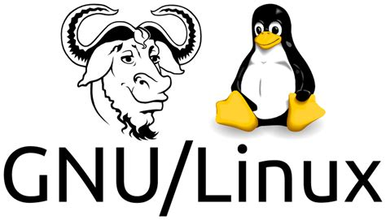

Gastón Ramos
Blog personal
¿Vos qué entorno usás?
Escrito en una mañana, 31 de Mayo de 2024El mundo de la programación y el IT en general requiere de muchos conocimientos que además cambian con el tiempo, muchas veces, muy rápido, es decir en pocas palabras para poder ser un programador más o menos decente hay que saber muchas cosas, sí, ¡muchas de verdad!. Por este motivo cuando uno empieza desde cero probablemente sea muy difícil elegir qué cosas aprender primero, de todo lo que hay que aprender ¿por dónde debo empezar? Pués bien, obviamente si queremos aprender a programar debemos empezar por aprender por el lenguaje de programación, que para empezar yo recomiendo fuertemente Ruby como primer lenguaje, aunque hoy no quiero escribir de esto, hoy tengo ganas de escribir acerca de algo que no veo mucho que en general se hable o se discuta mucho, y esto es el entorno, ¿qué es para mí el entorno? bueno para mí el entorno de un programador está conformado por: La habitación dónde trabaja, la silla, el escritorio, después el teclado, el monitor y la computadora, y por supuesto el Sistema operativo, el entorno de ventanas y una de las cosas más importantes el editor o la ide.
El sistema operativo, el de un Hacker. GNU/Linux
Hablemos por ejemplo del sistema operativo, para mí, un buen hacker debe usar Linux, por varios motivos, hay cosas escritas al respecto pero podría decir acá que, el 90% de los servidores de internet son servidores Linux, y cuando tengas que subir tu programa a producción, lo más probable es que sea desplegado en un entorno Linux, con lo cuál es bueno que el entorno que uses sea lo más parecido al entorno de producción. Pero más allá de esto también podemos decir que técnicamente es muy bueno, linux tiene una filosofía como esta: "los programas hace UNA sola cosa y la hacen bien, así por ejemplo tenemos algunos comandos útiles, como cat, qué lo unico que hace es mostrar el contenido de un archivo, o less que hace lo mismo pero con paginación, así también tenemos grep para buscar texto dentro de archivos, o tr para reemplazar (translate) texto. Además por ejemplo el shell de linux nos permite hacer algo fantástico con estas herramientas pequeñas y son las tuberías o pipes, pudiendo de esta manera enviar la salida de un comando a la entrada del siguiente, como por ejemplo:
cat usuarios.txt | grep gaston | wc -l
Este script cuenta cuantos usuarios tienen como nombre 'gaston', no voy a explicar como funciona, pero
se podrán dar cuenta del poder de este sistema de herramientas chiquitas que unidas puede hacer cosas muy
útiles.
Linux es un sistema libre, de ahí su nombre completo GNU/Linux con esto tenemos la seguridad de que tenemos el 100% del control de lo que hacemos y somos 100% dueños de los programas y los formatos que usamos. Hay muchas distribuciones o sabores de Linux, así que podés elegir la que más te guste, en lo personal uso GNU/Linux Debian.
El mouse es tu enemigo. Entorno de ventanas, Xmonad
El entorno de ventanas es algo también muy importante, por que nos determina cómo vamos a interactuar con los programas que tenemos instalados en la computadora, es el que nos presenta la información en la pantalla, y nos permite abir programas, entre otras cosas.
Un entorno de ventanas en GNU/Linux es por ejemplo Gnome, que es uno de los más populares, obviamente tiene ventanas y las mismas se puede mover en el escritorio, minimizar, etc. Además trae un escritorio, dónde puede haber íconos, etc. pero no es de lo que quiero escribir hoy, Hoy quiero escribir y mostrar un poco el entorno que uso desde hace unos años, se llama Xmonad bueno lo que tiene de "raro" Xmoand es que minpula las ventanas ¡sin usar el mouse! seguramente se preguntaran, ¿para qué carajos quiero esto? sencillo, usar el mouse es lento es mucho más lento usar el mouse que usar el teclado (ya vamos a hablar de esto... el teclado).
Así es como yo uso Xmonad: lo primero que hago es abrir la terminal, esto lo hago con la siguiente combinación de teclas:
CTL + Shift + RETdespués de esto ejecuto
screenen la terminal pero de esto vamos a hablar en otro artículo, bueno después de eso, generalmente abro el browser para navegar en internet que por ahora uso firefox, entonces para esto me muevo a otro espacio de trabajo, con la siguiente combinación de teclas:
ALT + 2y después abro el firefox
ALT + pesto me muestra una barra superior y entonces tipeo: 'fire' y xmonad me autocompleta el resto, presiono RET (enter) y se abre el firefox. ¿Nótaron que hasta ahora no usé el mouse? Bueno ahora voy a abrir otra terminal en otro espacio de trabajo para abrir el editor, entonces
ALT + 3eso me lleva al espacio de trabajo nro 3 y ahí abro una nueva terminal
CTL + Shift + RETy ejecuto Emacs (de esto también vamos a hablar más adelante), lo ejecuto con un alias de shell que me hice así que sólamente escribo la letra 'e' en la terminal. A partir de este momento ya puedo empezar a trabajar...
Acá les dejo un videito de que muestra lo explicado, como arranco mi sesión con Xmomand.
Continuará...
Nos leemos,
Gastón Ramos
::: Si querés comentar algo mandame un email: ramos.gaston AT gmail.com :::